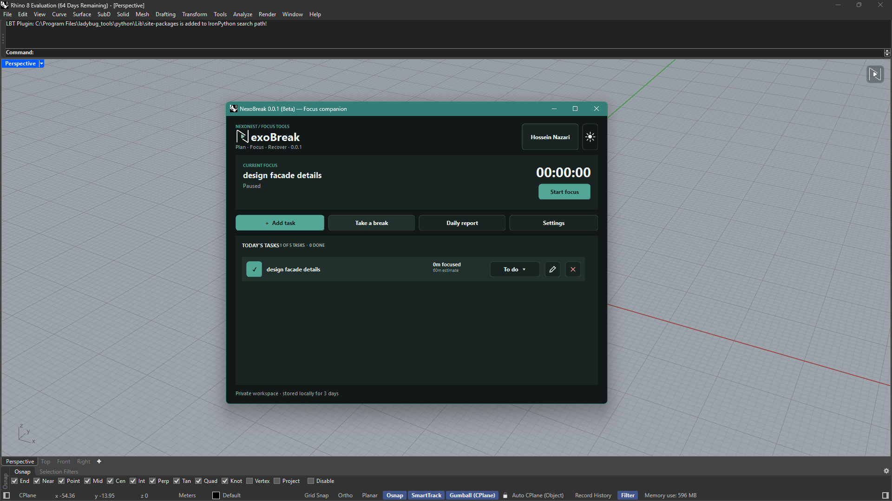
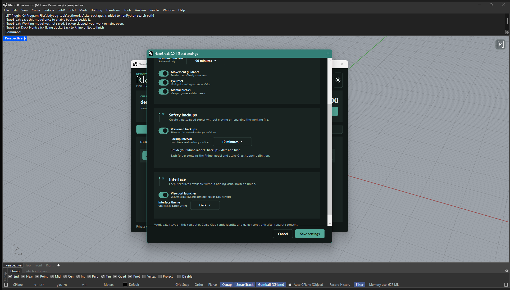
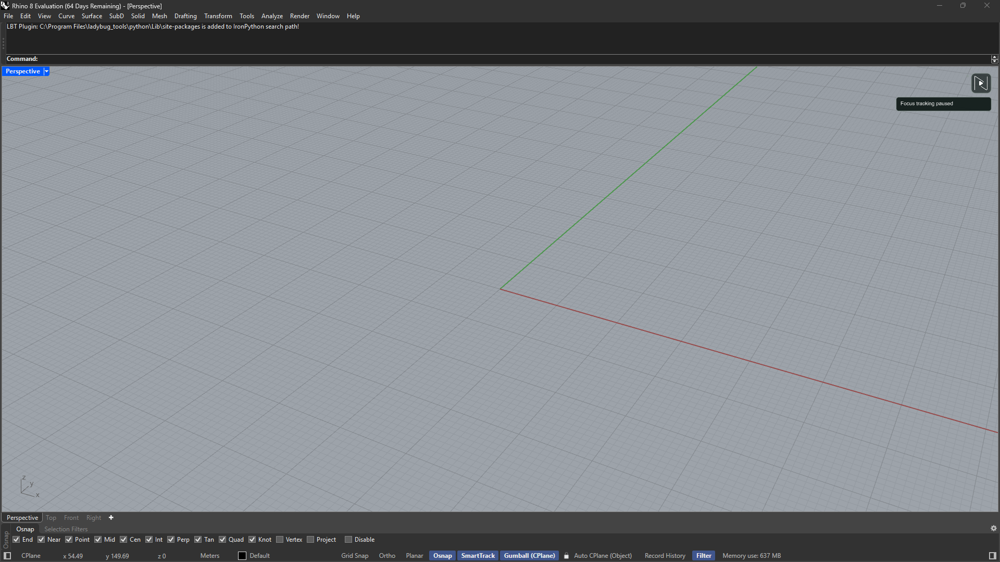
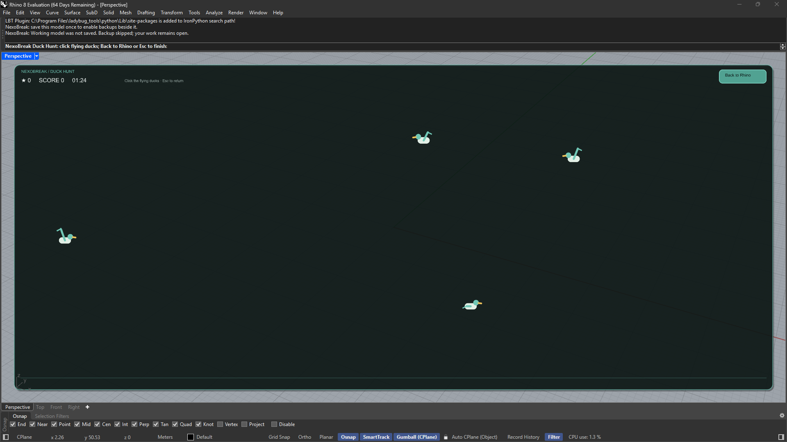
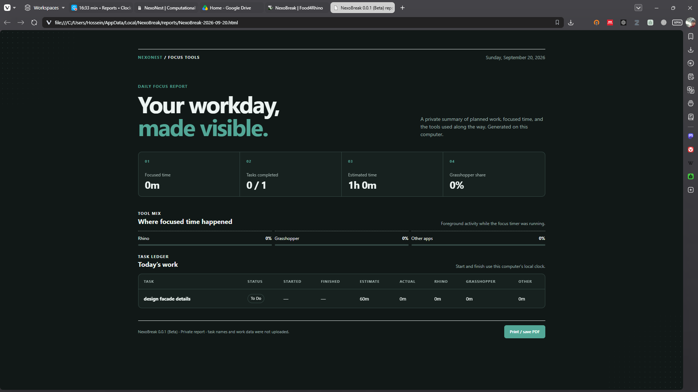

Daily task planning
Plan up to five tasks, add focusable subtasks and next-step notes, and keep the current task visible.
NexoNest / Rhino productivity
A focus and break companion for Rhino that brings daily planning, time tracking, guided pauses, short viewport games, local reports, and autosave-style versioned backups into the modeling workspace.
How can long Rhino sessions stay focused without separating planning, breaks, reports, and project safety from the modeling environment?
NexoBreak keeps the work loop inside Rhino: choose a small daily plan, track time against the selected task, pause for a short activity, and return with your focus state still clear.
Design work often happens in long, nonlinear sessions. NexoBreak gives that day a practical frame without asking you to manage a separate productivity app beside Rhino.
Plan up to five daily tasks, divide them into focusable subtasks, estimate their duration, and leave a next-step note before a break. Subtask time is included in its parent task, and tracking continues when the dashboard is closed.
The main dashboard is intentionally compact: select the current task, start focus, add or edit work, take a break, open the daily report, or adjust settings without leaving the modeling context.

Write a manageable task list for the day and choose the task you want to focus on first.
Start, pause, resume, and switch task tracking while the compact launcher keeps NexoBreak close to the viewport.
Take a guided movement break, visual activity, direction game, or short viewport game when you need a reset.
Read a local daily report and compare estimates, actual time, application activity, and task completion.
Backups are optional. Enable scheduled snapshots of the saved Rhino model and active Grasshopper definition, stored together in timestamped folders beside the model. Choose Latest backups, Recent days, or Keep all for retention. You continue working in the original files; snapshots are additional copies, not a replacement for saving your work or keeping an independent backup.

Plan up to five tasks, add focusable subtasks and next-step notes, and keep the current task visible.
Review task start and completion times, estimated versus actual duration, and activity across Rhino, Grasshopper, other applications, and idle periods.
Use active-work reminders and choose a stretch routine, moving-dot tracking, Vector Vision, Star Catcher, or Duck Hunt.
Create scheduled snapshots of the active Rhino model and Grasshopper definition in timestamped folders beside the saved model.
NexoBreak does not need to stay open as a large dashboard. A compact launcher sits in the viewport, shows the current tracking state, and keeps the companion available without adding much visual noise.

Starting a break pauses focus tracking. Quiet breaks, the stretch routine, moving-dot tracking, Vector Vision, Star Catcher, and Duck Hunt run inside the active Rhino viewport; visual activities are selected there too. Return with the same task, subtask, and next-step note, then explicitly resume focus when ready. Screen activities complement breaks; they do not replace rest away from the screen.

NexoBreak turns the day into a private local report: focused time, completed tasks, estimates, actual time, foreground activity, and a task ledger. It is built for reflection, not remote monitoring.

Task lists, activity data, and reports remain on the computer.
Versioned backups are stored beside the saved model, not uploaded by the core workflow.
Core features work without an account. To sync Star Catcher and Duck Hunt scores, request a six-digit email code in Account, then paste it into any code box. Only account identity and game scores are shared.
Newsletter signup is separate from the plugin and requires its own consent.
| Area | Requirement | Notes |
|---|---|---|
| OS | Windows | Built for Windows Rhino workstations. |
| Rhino | Rhino 8.34 or later | Rhino must be running .NET 8. |
| License | Proprietary / Free | Available through food4Rhino. |
| Categories | General, Modeling, Product design | A productivity companion for Rhino and Grasshopper users. |
Get NexoBreak from its Food4Rhino product page. Windows and Rhino 8.34 or later running .NET 8 are required.
For a Yak download, drag the package into Rhino and follow the installation prompt. For an RHP download, use Options > Plug-ins > Install. Use one installation method, then restart Rhino.
Run NexoBreak, add a task and choose Start focus. Configure reminders and optional backups in Settings. An account is needed only for optional score synchronization.
Download NexoBreak from its official Food4Rhino product listing. Check the version and installation details there; downloads are provided by Food4Rhino rather than hosted on this site.